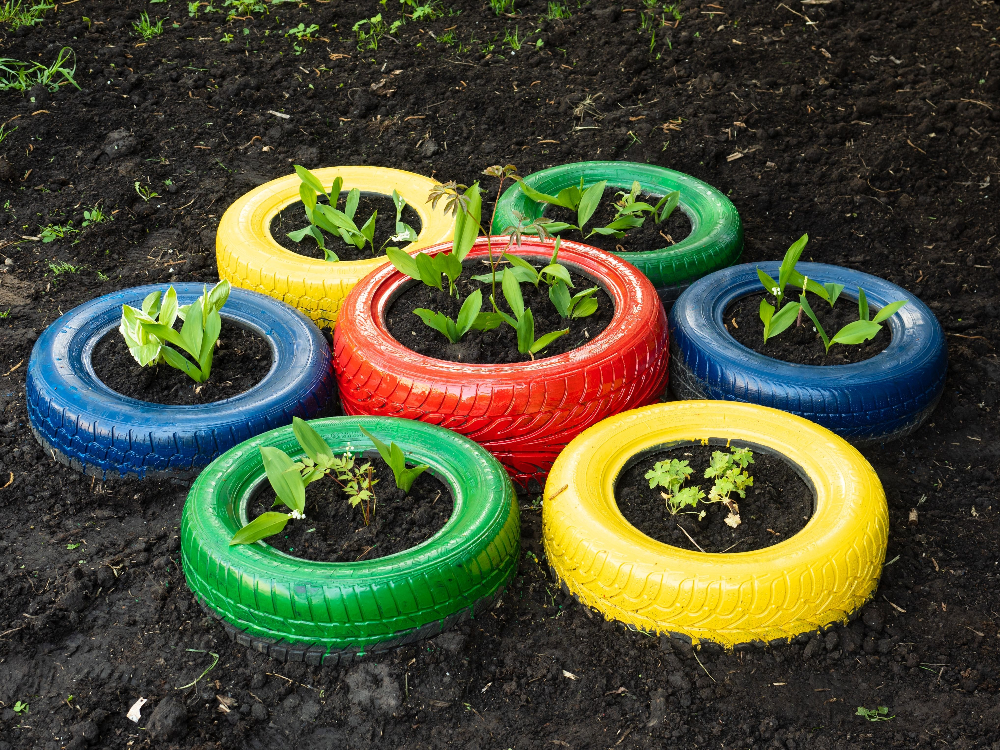
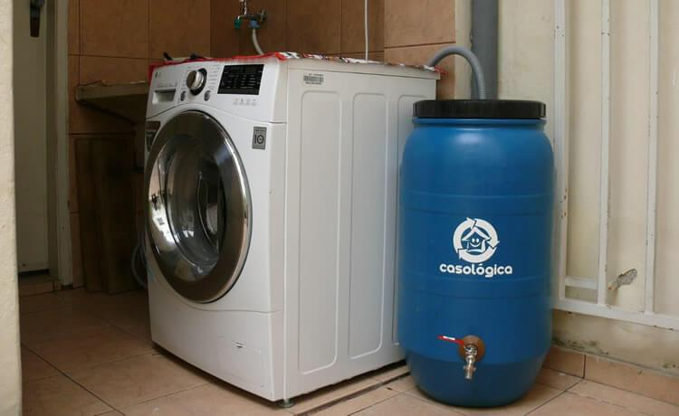
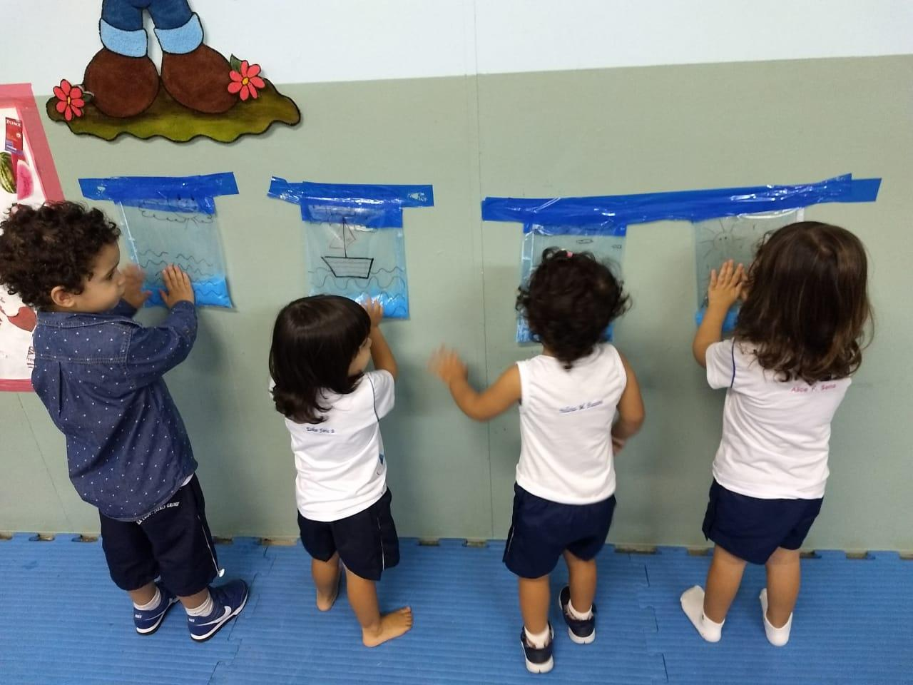
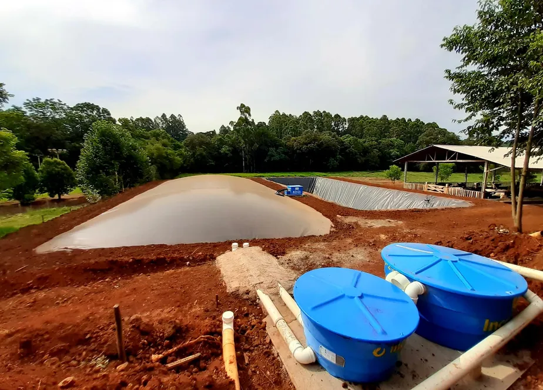
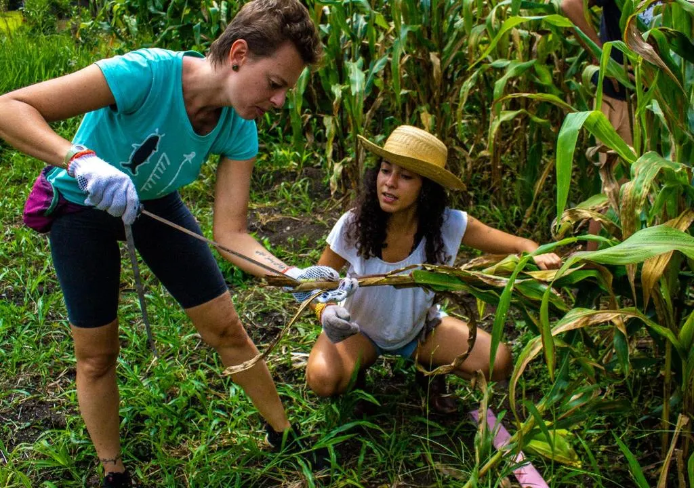

Jardins Sustentáveis
Moradores estão utilizando água da chuva para irrigar seus jardins, reduzindo o consumo de água potável em até 35%.

Reuso Doméstico
Com sistemas simples, famílias estão reutilizando água da máquina de lavar para lavar calçadas e descargas sanitárias.

Educação nas Escolas
Projeto AquaEduca ensina crianças e adolescentes a importância do reaproveitamento hídrico com atividades práticas.

Captação de Chuva em Alta
O número de residências com cisternas e sistemas de filtragem de chuva cresceu 60% no último ano em áreas urbanas.
Tecnologia a Favor da Água
Novas tecnologias estão sendo implementadas para automatizar o tratamento e reaproveitamento da água em casas e indústrias.

Comunidades Sustentáveis
Bairros inteiros estão se unindo para criar sistemas coletivos de captação e reuso de água, promovendo sustentabilidade local.